记得你和同学是怎样比较个子高矮的吗？可能大家通常会用下面两种办法：一是让两人分别说出自己的身高，对比一下；二是让两人背对背地站在同一块平地上，脚底平齐，观看两人的头顶，直接比出高矮（图3.5.7）。
那么，我们可以怎样比较两条线段的长短呢？
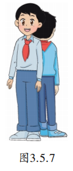
你一定会发现，两条线段也可以通过类似的方法来比较长短。对于图3.5.8中的线段 \(AB\) 、 \(CD\) , 我们用刻度尺量一下, 就可以知道它们的长短了。这是第一种方法。
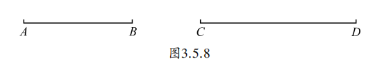
这里线段 \(AB\) 比线段 \(CD\) 短, 我们可以记为 \(AB < CD\) (或 \(CD > AB\))。
比较两条线段的长短的第二种方法与直接比较个子高矮一样, 就是把其中一条线段移到另一条线段上去加以比较. 如图3.5.9, 将线段 \(AB\) 移到线段 \(CD\) 上, 让点 \(A\) 和点 \(C\) 重合, 观察另外两个端点 \(B\) 、 \(D\) 的位置, 便可确定这两条线段的长短。图中点 \(B\) 落在线段 \(CD\) 的内部, 可以知道线段 \(AB\) 比线段 \(CD\) 短, 也就是 \(AB < CD\) 。
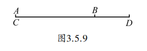
如果点 \(B\) 落在线段 \(CD\) 的延长线上呢? 如果点 \(B\) 恰好与点 \(D\) 重合, 那么可以知道两条线段一样长, 即线段 \(AB\) 与线段 \(CD\) 相等, 记为 \(AB = CD\)。
如图3.5.10, \(MN\) 为已知线段, 你能用直尺和圆规准确地作一条与 \(MN\) 相等的线段吗?
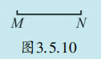
如图3.5.11，我们可以先作射线 \(AB\) ，然后用圆规量出线段 \(MN\) 的长，再在射线 \(AB\) 上截取 \(AC = MN\) ，这样就将线段 \(MN\) 移到射线 \(AB\) 上，线段 \(AC\) 就是所要求作的线段。
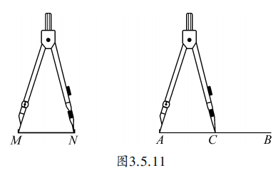
用直尺和圆规作一条线段等于已知线段的2倍。
把一条线段分成两条相等线段的点，叫做这条线段的中点（midpoint）。在图3.5.12中，点 \(C\) 是线段 \(AB\) 的中点，可以写成 \(AC = CB = \frac{1}{2} AB\), 或 \(AB = 2AC = 2CB\)。
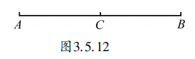
又如图3.5.13， \(AB = 6\mathrm{cm}\) ，点 \(C\) 是线段 \(AB\) 的中点，点 \(D\) 是线段 \(CB\) 的中点，那么 \(AD\) 有多长呢？
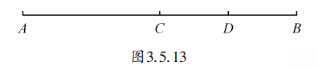
因为点 \(C\) 是线段 \(AB\) 的中点，所以 \(AC = CB = \frac{1}{2} AB = 3\mathrm{cm}\)。
又因为点 \(D\) 是线段 \(CB\) 的中点，所以 \(CD = \frac{1}{2} CB = 1.5\mathrm{cm}\)。
所以 \(AD = AC + CD = 3 + 1.5 = 4.5\mathrm{cm}\)。
如图，已知线段 \(AB = 10\mathrm{cm}\)，点 \(C\) 在线段 \(AB\) 上，且 \(AC = 4\mathrm{cm}\)。点 \(M\) 是线段 \(AC\) 的中点，点 \(N\) 是线段 \(BC\) 的中点。求线段 \(MN\) 的长。
∵ 点 \(M\) 是 \(AC\) 的中点，\(AC = 4\mathrm{cm}\)，
∴ \(MC = \frac{1}{2} AC = \frac{1}{2} \times 4 = 2\mathrm{cm}\)。
∵ \(AB = 10\mathrm{cm}\)，\(AC = 4\mathrm{cm}\)，
∴ \(BC = AB - AC = 10 - 4 = 6\mathrm{cm}\)。
∵ 点 \(N\) 是 \(BC\) 的中点，
∴ \(CN = \frac{1}{2} BC = \frac{1}{2} \times 6 = 3\mathrm{cm}\)。
∴ \(MN = MC + CN = 2 + 3 = 5\mathrm{cm}\)。
结论： \(MN = 5\mathrm{cm}\)，恰好等于 \(AB\) 的一半。
如图，已知线段 \(AB = 8\mathrm{cm}\)，点 \(C\) 在线段 \(AB\) 的延长线上，且 \(BC = 4\mathrm{cm}\)。点 \(M\) 是线段 \(AC\) 的中点，点 \(N\) 是线段 \(BC\) 的中点。求线段 \(MN\) 的长。
∵ \(AB = 8\mathrm{cm}\)，\(BC = 4\mathrm{cm}\)，
∴ \(AC = AB + BC = 8 + 4 = 12\mathrm{cm}\)。
∵ 点 \(M\) 是 \(AC\) 的中点，
∴ \(MC = \frac{1}{2} AC = \frac{1}{2} \times 12 = 6\mathrm{cm}\)。
∵ 点 \(N\) 是 \(BC\) 的中点，
∴ \(NC = \frac{1}{2} BC = \frac{1}{2} \times 4 = 2\mathrm{cm}\)。
观察图形，\(MN = MC - NC = 6 - 2 = 4\mathrm{cm}\)。
结论： \(MN = 4\mathrm{cm}\)，恰好等于 \(\frac{1}{2} AB\)。
※ 无论点 \(C\) 在线段 \(AB\) 上还是延长线上，\(MN = \frac{1}{2} AB\) 恒成立（双中点模型）。
1. 根据所示图形填空：
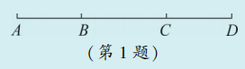
(1) \(AB + BC = \_\_\_\_\) (2) \(AD = \_\_\_\_ + CD\)
(3) \(CD = AD - \_\_\_\_\) (4) \(BD = CD + \_\_\_\_ = AD - \_\_\_\_\)
(5) \(AC - AB + CD = \_\_\_\_ = BC + \_\_\_\_\)
(1) \(AB + BC = AC\)
(2) \(AD = AC + CD\)
(3) \(CD = AD - AC\)
(4) \(BD = CD + BC = AD - AB\)
(5) \(AC - AB + CD = BD = BC + CD\)
2. 如图，已知点 \(C\) 是线段 \(AD\) 的中点， \(AC = 1.5\mathrm{cm}\) ， \(BC = 2.2\mathrm{cm}\) ，那么 \(AD = (\quad)\mathrm{cm}\) ， \(BD = (\quad)\mathrm{cm}\)。
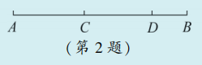
∵ \(C\) 是 \(AD\) 的中点，\(AC = 1.5\mathrm{cm}\)，
∴ \(AD = 2 \times AC = 3\mathrm{cm}\)。
由图形可知，点 \(B\) 在 \(C\) 和 \(D\) 之间，
则 \(BD = BC - CD = 2.2 - 1.5 = 0.7\mathrm{cm}\)。
∴ \(AD = 3\mathrm{cm}\)，\(BD = 0.7\mathrm{cm}\)。
3. 请通过直接观察，分别比较下列三组图形中线段 \(a\) 、 \(b\) 的长短，再用刻度尺量一量，看看你的观察结果是否正确。
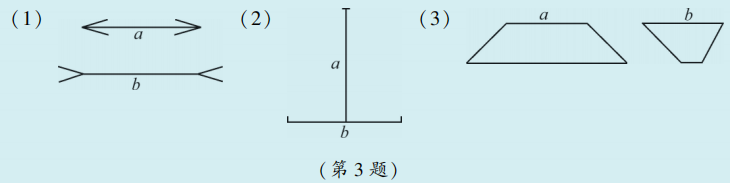
4. 已知线段 \(MN\) 和线段 \(OP\) ，用直尺和圆规作一条线段 \(AB\) ，使 \(AB = MN + OP\) 。（不写作法，保留作图痕迹）
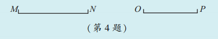
类比思想： 将比较线段长短与比较身高进行类比。
数形结合： 用数量表示线段长度，用图形表示线段关系。
转化思想： 通过截取、叠加将线段的和差转化为作图操作。
分类讨论思想： 点C在线段上或延长线上时，中点结论统一。
尺规作图起源于古希腊，数学家们发现只用没有刻度的直尺和圆规，可以作出许多几何图形，如等边三角形、正方形、正五边形等。著名的“几何三大难题”（三等分角、化圆为方、倍立方）就是尺规作图无法解决的问题，它们的解决推动了数学的深入发展。今天，尺规作图仍是培养几何思维的重要工具。
欧拉公式被誉为“上帝创造的公式”之一，它简单而深刻地揭示了多面体的顶点、棱和面之间的关系：
\[ V - E + F = 2 \]
其中 \(V\) 表示顶点数，\(E\) 表示棱数，\(F\) 表示面数。
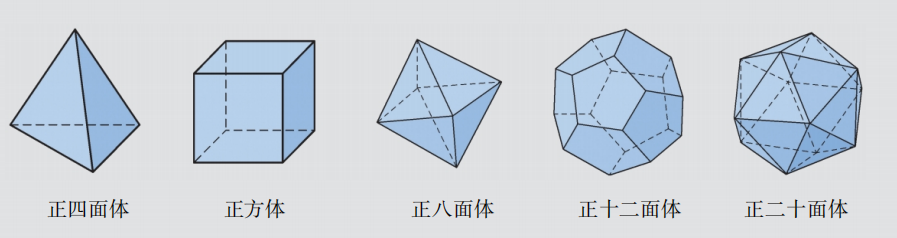
随便找一个多面体数一数：
无论多面体多么奇特（只要表面是完整的凸多面体），这个关系永远成立！它是由瑞士大数学家 欧拉 在1750年发现的，因此用他的名字命名。
欧拉公式就像多面体的“身份证”，把三个最直观的量（顶点、棱、面）完美地联系在一起。后来，这个公式被推广到了更广阔的领域——拓扑学中，成为研究曲面分类的基础。
✨ 从具体到抽象，用数学的眼光看世界 ✨